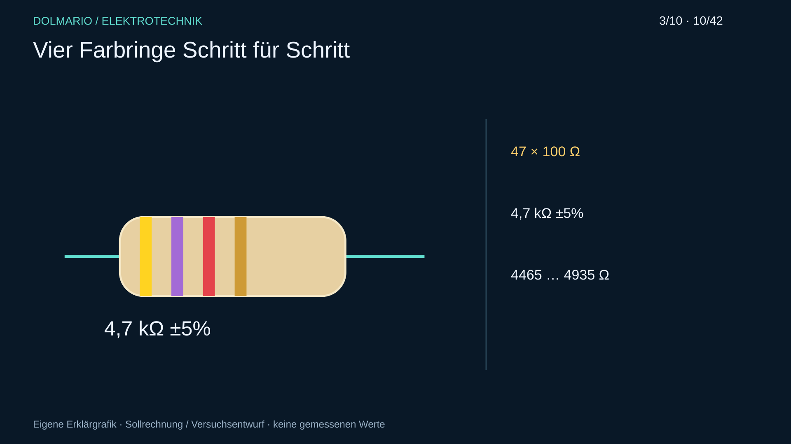
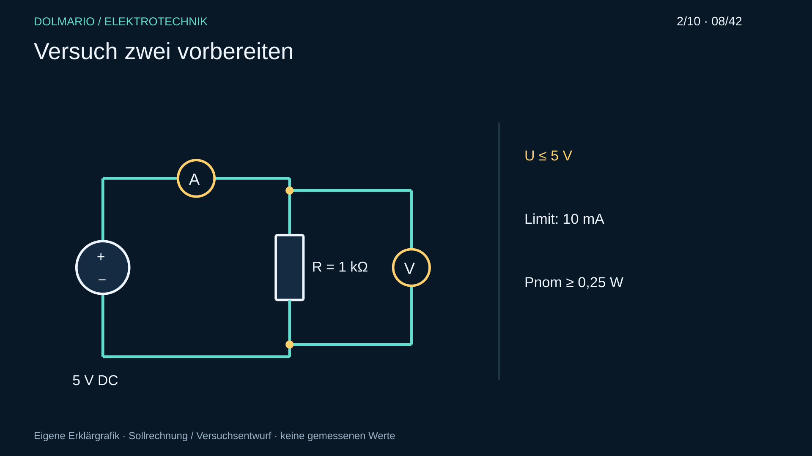
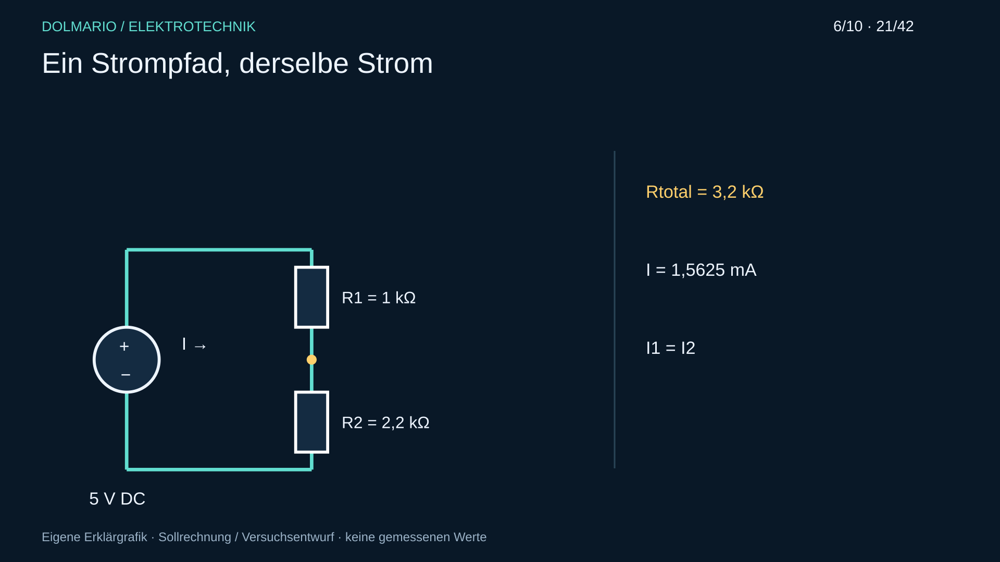
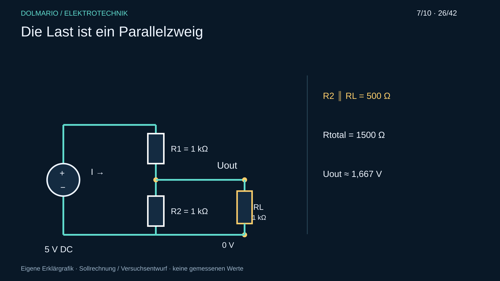
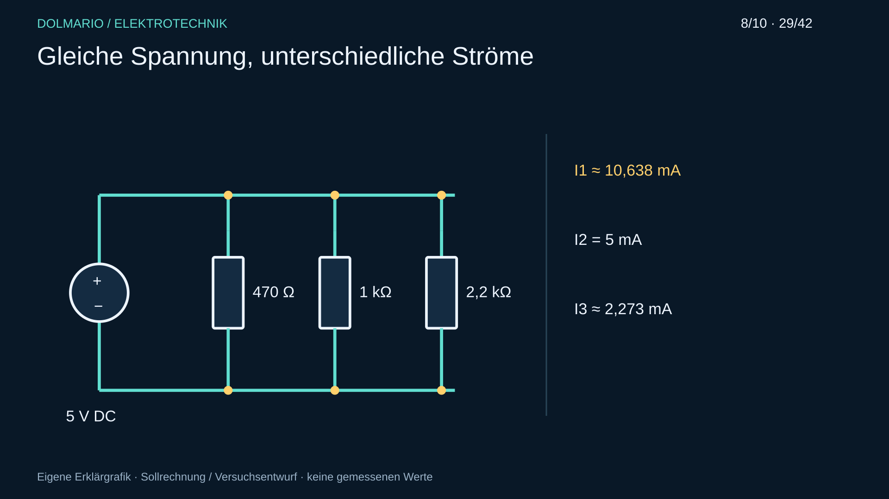
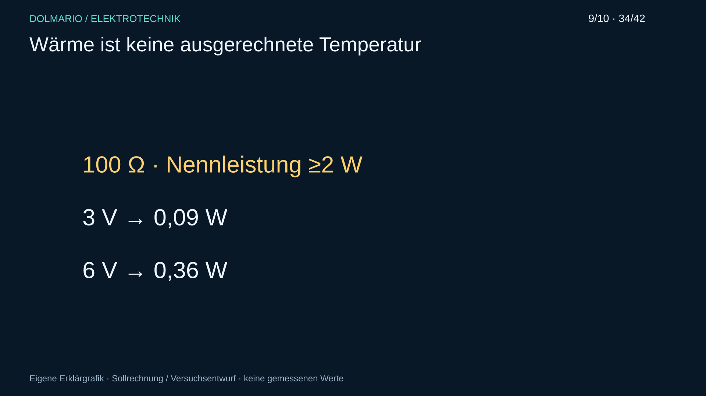
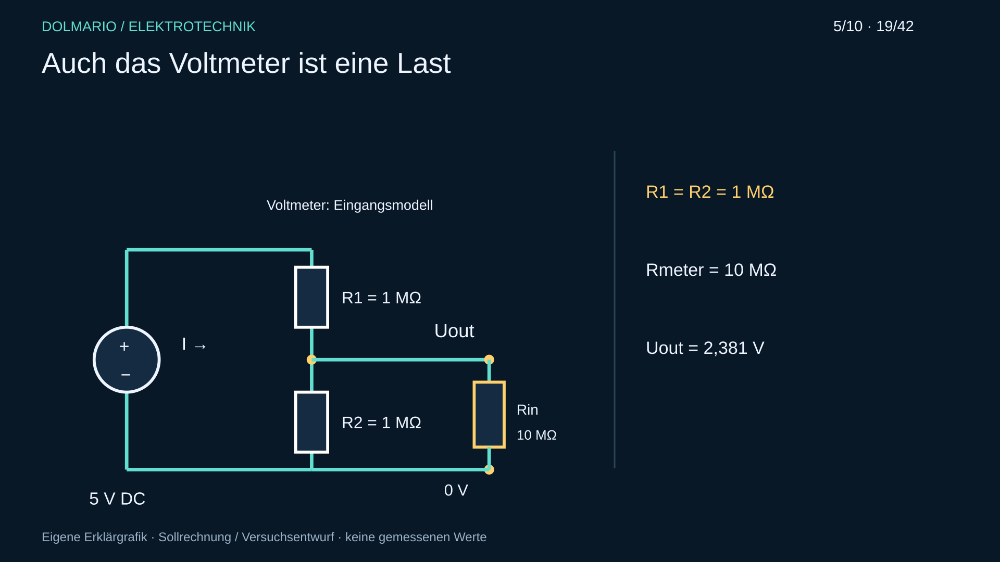
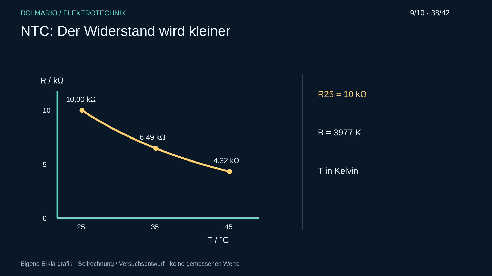

Eigene Unterrichtsentwürfe, nicht durchgeführt. Reale Messfelder bleiben leer.
470 Ω, 1 kΩ, 4,7 kΩ mit bekannten Toleranzen; DMM, Farbkarte, Lupe. Keine externe Quelle.
Erst Farbcode, Nennwert und Bereich notieren. Bauteile einzeln spannungsfrei messen; Leitungs-/Kontaktanzeige dokumentieren.

| Bauteil | Farbfolge | Nennwert Ω | Bereich Ω | Messwert Ω | Erklärung |
|---|---|---|---|---|---|
Vorhersage / Beobachtung / Abweichung / Begründung:
____________________________________________________________
1 kΩ ±5%, ≥0,25 W; isolierte Quelle, geeignete Messgeräte; ≤5 V, Stromgrenze 10 mA.
Quelle → Amperemeter → R → Quelle; Voltmeter parallel zu R. Bei ausgeschaltetem Ausgang aufbauen. U an R für 1/2/3/4/5 V und I messen.

| U an R V | I mA | R=U/I Ω | Messbedingungen |
|---|---|---|---|
Vorhersage / Beobachtung / Abweichung / Begründung:
____________________________________________________________
1 kΩ und 2,2 kΩ, jeweils ≥0,25 W; 5 V, Limit 10 mA.
Vorhersage, kontrollierte Reihenschaltung, gemeinsamer Strom und Teilspannungen. Vor jeder Änderung Ausgang aus und Buchsen prüfen.

| I mA | U1 V | U2 V | U1+U2 V | Uquelle V | Erklärung |
|---|---|---|---|---|---|
Vorhersage / Beobachtung / Abweichung / Begründung:
____________________________________________________________
R1=R2=RL=1 kΩ, jeweils ≥0,25 W; 5 V, Limit 10 mA.
Zuerst R1/R2 als Teiler; danach RL parallel zu R2. Vor Umbau ausschalten. Beide Zustände vergleichen.

| Zustand | Uaus V | Iquelle mA | IRL mA | Erklärung |
|---|---|---|---|---|
Vorhersage / Beobachtung / Abweichung / Begründung:
____________________________________________________________
470 Ω, 1 kΩ, 2,2 kΩ, jeweils ≥0,25 W; 5 V, Limit 20 mA.
Drei Zweige parallel. Teilstrommessung nur durch Öffnen des betreffenden Zweigs bei ausgeschaltetem Ausgang; A in Reihe.

| Zweig | U V | I mA | G mS | P mW | Erklärung |
|---|---|---|---|---|---|
Vorhersage / Beobachtung / Abweichung / Begründung:
____________________________________________________________
100 Ω mit ≥2 W laut konkretem Datenblatt; geeignete Halterung, wärmebeständige Unterlage, Temperaturfühler. ≤6 V, Limit 70 mA.
Nicht im Plastiksteckbrett erhitzen, nicht anfassen. Je 3 V/6 V maximal 60 s, alle 15 s messen. Bei Rauch/Geruch/instabilem Aufbau/>50°C aus und abkühlen. 50°C ist eine Unterrichts-Abbruchgrenze, keine Berührungsgarantie.

| U V | Zeit s | I mA | P W | Temperatur °C | Abbruchgrund |
|---|---|---|---|---|---|
Vorhersage / Beobachtung / Abweichung / Begründung:
____________________________________________________________
Zwei 1 MΩ, zwei 1 kΩ; ≥0,25 W; DMM-Eingang laut Handbuch, Rechenannahme 10 MΩ; 5 V.
A: 1-MΩ-Teiler mit DMM messen und Belastung berechnen. B: Versorgung getrennt, zwei 1 kΩ parallel im Ohmbereich; dann einen Zweig lösen.

| Teil | Vorhersage | echte Messung | Eingangswiderstand | Erklärung |
|---|---|---|---|---|
Vorhersage / Beobachtung / Abweichung / Begründung:
____________________________________________________________
Freigegebener NTCLE100E3103JB0 oder geeigneter äquivalenter 10-kΩ-Typ, DMM, Thermometer, verschlossener warmer Wasserbehälter.
Indirekt 25/35/45°C temperieren; Kontakte trocken. Keine nicht freigegebene Tauchprobe, keine Flamme/Heißluft. Stabilisierung abwarten, extern unversorgt messen; DMM-Eigenerwärmung prüfen.

| Temperatur °C | R kΩ | Stabilisierung | Abweichung | Erklärung |
|---|---|---|---|---|
Vorhersage / Beobachtung / Abweichung / Begründung:
____________________________________________________________